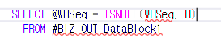

체크 SP 주의사항
중복체크
----====================================--
---- 중복여부체크(PalletSeq이 2개 이상일 경우)
----====================================--
---- 중복체크Message 받아오기
EXEC dbo._SCOMMessage @MessageType OUTPUT,
@Status OUTPUT,
@Results OUTPUT,
6 , -- 중복된@1 @2가(이) 입력되었습니다.(SELECT * FROM _TCAMessageLanguage WHERE MessageSeq = 6)
@LanguageSeq ,
0,'' -- SELECT * FROM _TCADictionary WHERE Word like '%구매카드번호%'
--========================================--
-- 이미저장된시트에서중복되는것있는지확인 --
--========================================--
UPDATE A
SET Result = @Results ,
MessageType = @MessageType ,
Status = @Status
FROM #BIZ_OUT_DataBlock2 AS A
JOIN gcos_TLGHighRackOutItem AS B ON
A.ItemSeq = B.ItemSeq
AND A.MDSeq = B.MDSeq
AND A.RackSeq = B.RackSeq
AND A.LotNo = B.LotNo
AND A.Serl \<> B.Serl
AND A.RackOutSeq = B.RackOutSeq -- 중복 컬럼이 추가 될수록 똑같이 조건 넣어주기
WHERE A.WorkingTag IN ('A','U')
AND A.Status = 0
AND B.CompanySeq = @CompanySeq
--========================================--
-- 같은저장시트에서중복되는것이있는지확인 --
--========================================--
UPDATE A
SET Result = @Results ,
MessageType = @MessageType ,
Status = @Status
FROM #BIZ_OUT_DataBlock2 AS A
JOIN #BIZ_OUT_DataBlock2 AS B ON A.IDX_NO \<> B.IDX_NO
AND A.ItemSeq = B.ItemSeq
AND A.MDSeq = B.MDSeq
AND A.RackSeq = B.RackSeq
AND A.LotNo = B.LotNo
AND A.RackOutSeq = B.RackOutSeq -- 중복 컬럼이 추가 될수록 똑같이 조건 넣어주기
WHERE A.WorkingTag IN ( 'A','U' )
AND A.Status = 0
--===============================
저장 SP 에서 같이 체크 해도 상관 없음
가급적이면 @변수 안쓰기
테이블에서 데이터 가져올 때는 ISNULL 처리

체크 시
WorkingTag, Status는 필수
+. Join 걸 때 CompanySeq 도 넣기
UPDATE A
SET Result = '중복된 일자 구간이 입력되었습니다.' ,
MessageType = @MessageType ,
Status = @Status
FROM #BIZ_OUT_DataBlock1 AS A
JOIN #BIZ_OUT_DataBlock1 AS B ON B.StartYM \<= A.EndYM
AND B.EndYM >= A.StartYM
AND B.IDX_NO \<> A.IDX_NO
WHERE A.WorkingTag IN ('U')
AND A.Status = 0
AND B.CompanySeq = @CompanySeq